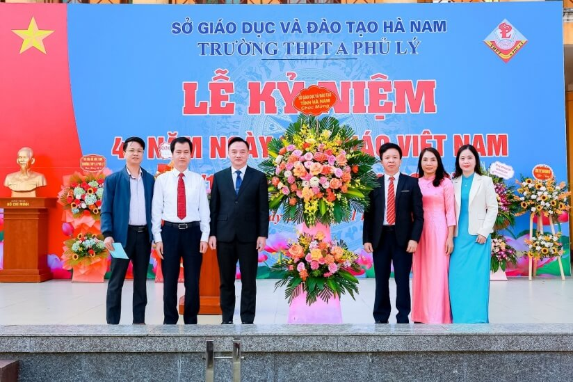
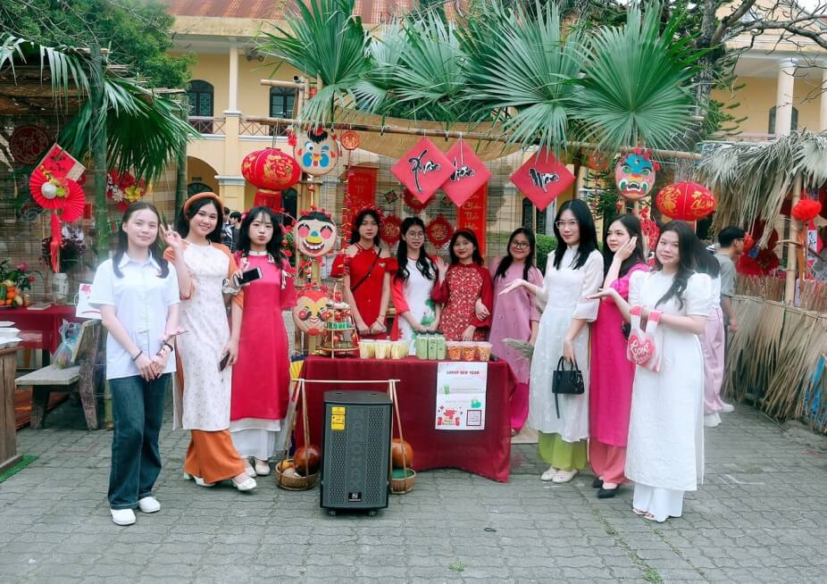
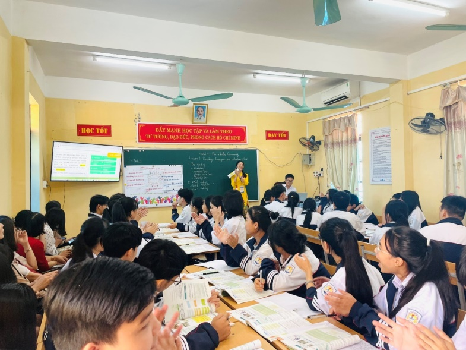
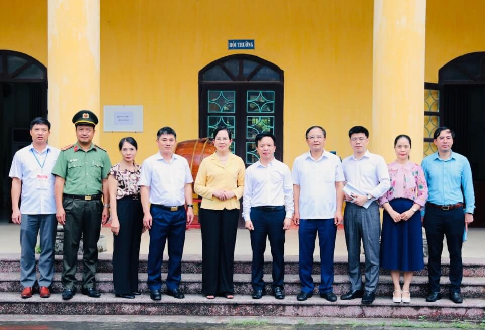

Trường THPT A Phủ Lý - điểm sáng về chất lượng giáo dục của tỉnh Hà Nam
Trong suốt những năm qua, Trường THPT A Phủ Lý (tỉnh Hà Nam) đã không ngừng đổi mới, nâng cao chất lượng dạy và học; quan tâm bồi dưỡng, đào tạo phát triển năng lực học sinh; xây dựng nền tảng giáo dục vững chắc, trở thành điểm sáng trong phong trào dạy tốt, học tốt trở thành địa chỉ tin cậy, khẳng định uy tín chất lượng giáo dục mũi nhọn của tỉnh.
Trường THPT A Phủ Lý hiện có 80 cán bộ, giáo viên giảng dạy, quản lí 31 lớp học với tổng số 1302 học sinh. Cơ sở vật chất của nhà trường khang trang, rộng rãi với 31 lớp học, 6 phòng học bộ môn và 1 nhà tập đa năng. Trang thiết bị, phòng chức năng phục vụ cho hoạt động dạy và học cơ bản đáp ứng nhiệm vụ dạy học và các hoạt động giáo dục.

Ảnh 1. Ban Giám hiệu Nhà trường trong Lễ Kỷ niệm Ngày Nhà giáo Việt Nam
Từ những ngày đầu mới thành lập còn nhiều khó khăn về điều kiện cơ sở vật chất và đội ngũ nhà giáo, Nhà trường đã xác định mục tiêu nỗ lực khắc phục khó khăn để đáp ứng lòng mong mỏi và khát vọng được học tập của nhân dân và học sinh thị xã Phủ Lý. Vì thế, Nhà trường luôn chủ động vận dụng sáng tạo phương châm giáo dục gắn học với hành, kết hợp giáo dục đạo đức và hoạt động xã hội, tổ chức nhiều phong trào thi đua, xây dựng Nhà trường, có sự bắt nhịp nhanh chóng, hòa mình với phong trào giáo dục của tỉnh. Cùng với đó, tinh thần đổi mới và sáng tạo của các nhà quản lý giáo dục qua các thời kỳ của Nhà trường đã lan tỏa, hòa quyện với lòng yêu nghề, tận tâm với học trò của các nhà giáo toàn trường, tạo nên một tập thể sư phạm đoàn kết, dân chủ, kỷ cương, đầy yêu thương và trách nhiệm, góp phần không nhỏ trong việc đào tạo những thế hệ học sinh ưu tú, trưởng thành, có nhiều đóng góp cho xã hội.
Năm học 2023 - 2024, chất lượng giáo dục toàn diện của Nhà trường được nâng cao. Về chất lượng giáo dục đạo đức, học sinh toàn trường đạt xấp xỉ 100% loại tốt, không có học sinh xếp loại TB, Yếu; không có học sinh vi phạm pháp luật. Về chất lượng giáo dục trí dục, chất lượng giáo dục đại trà được đảm bảo, không có học sinh yếu; chất lượng học sinh giỏi nằm trong tốp cao, đạt thành tích vượt bậc cả về số lượng và chất lượng giải Học sinh giỏi các cấp. 100% học sinh đỗ tốt nghiệp trong kì thi tốt nghiệp THPT vừa qua. Điểm bình quân các môn đứng thứ 3 các trường đại trà trong tỉnh, có 31 học sinh đạt 27 điểm trở lên với 3 môn xét Đại học và có học sinh trong trong top 10 học sinh điểm cao nhất tỉnh Hà Nam.

Ảnh 2. Một buổi sinh hoạt ngoại khoá của Trường THPT A Phủ Lý
Bên cạnh giáo dục văn hóa, Nhà trường cũng luôn chú trọng và phát triển toàn diện cho học sinh cả về thể chất, tinh thần, kĩ năng sống. Công tác văn hóa văn nghệ, thể dục thể thao tiếp tục được quan tâm. Hoạt động văn hóa văn nghệ, thể dục thể thao gắn với hoạt động kỉ niệm các ngày lễ lớn của Nhà trường như: Lễ Khai giảng năm học mới, kỉ niệm ngày Phụ nữ Việt Nam 20/10; kỷ niệm 41 năm ngày Nhà giáo Việt Nam; lồng ghép trong các hoạt động trải nghiệm, sinh hoạt tập thể thứ 2 đầu tuần, qua đó tạo được không khí vui tươi sôi nổi và nâng cao kỹ năng sống cho học sinh.
Nhà trường cũng rất coi trọng công tác giáo dục thể chất cho học sinh. Trường đã đầu tư kinh phí mua sắm thiết bị, đồ dùng cần thiết, tạo điều kiện cho học sinh được tận dụng tối đa hiệu quả của nhà tập đa năng, sân bóng chuyền, bóng rổ, sân cầu lông.
Đặc biệt, công tác hướng nghiệp cho học sinh lớp 12 được quan tâm và coi trọng. Ban giám hiệu Nhà trường chủ động tăng cường phối hợp với các cơ sở giáo dục nghề nghiệp trong hoạt động giáo dục hướng nghiệp và chuẩn bị tâm thế học sinh phổ thông sau khi tốt nghiệp vào học và làm tại các cơ sở giáo dục nghề nghiệp; tuyên truyền định hướng nghề nghiệp cho học sinh;....

Ảnh 3. Giáo viên trường THPT A Phủ Lý thi GVDG cấp tỉnh môn tiếng Anh.
Với mong muốn nâng cao chất lượng giáo dục toàn diện, đội ngũ giáo viên cũng luôn được khuyến khích, động viên tham gia các lớp tập huấn, bồi dưỡng chuyên môn; tích cực, chủ động đổi mới phương pháp giảng dạy và học tập. Nhờ vậy, những năm gần đây, Nhà trường luôn có nhiều giáo viên đạt GVDG và GVCN giỏi các cấp. Năm học 2023 - 2024, 4/4 giáo viên Nhà trường tham dự Hội thi và đạt GVDG cấp tỉnh.

Ảnh 4. Đồng chí Lê Thị Thuỷ, Bí thư Tỉnh uỷ Hà Nam và các đồng chí lãnh đạo tỉnh về thăm và làm việc tại Trường THPT A Phủ Lý
Trải qua 27 năm xây dựng và phát triển, Trường THPT A Phủ Lý nhiều năm liền nhận Bằng khen của Bộ trưởng Bộ GD-ĐT, Bằng khen của Chủ tịch UBND tỉnh, Giấy khen của Giám đốc Sở GD-ĐT… góp phần làm cho bảng thành tích của Nhà trường dày lên theo năm tháng. Cũng từ nơi này, bao thế hệ học sinh đã miệt mài học tập, lao động, rèn luyện để khẳng định bản thân qua các kì thi học sinh giỏi, thi sáng tạo khoa học kỹ thuật, qua các hoạt động giáo dục khác. Đã có nhiều học sinh đỗ thủ khoa các trường đại học danh tiếng, là sinh viên xuất sắc; nhiều cựu học sinh thành đạt trong các lĩnh vực.